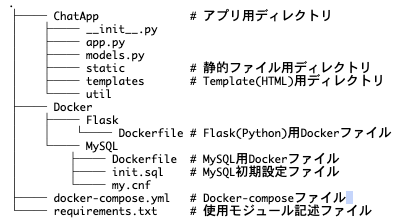
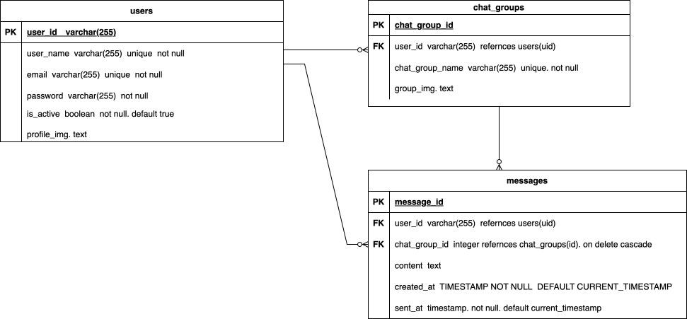
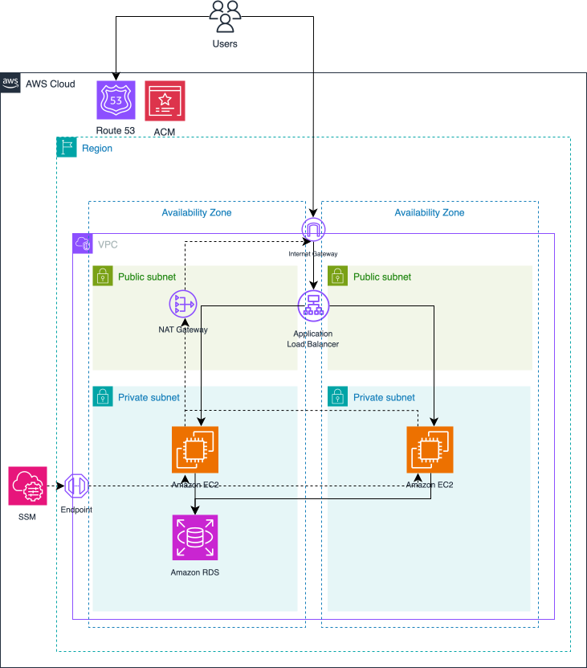

tomochat
~小学生を対象にした”安心して使えるチャットアプリ”~
【概要】
夜遅くまでグループLINEがやめられない小学生に向けた、21時〜翌朝6時は自動で利用制限がかかるチャットアプリです。
- 「寝たいけど途中退出が怖い」
- 「いじめが心配でグループLINEをやめられない」
- 「夜中までスマホを触るのを親が心配している」
といった子どもと親の双方が抱える不安を解決します。
【主な機能】
⭐️：担当部分
＜基本機能＞
- 認証機能（新規登録・ログイン・ログアウト）⭐️
- チャット（投稿・編集・削除）
- チャンネル（追加・編集・削除）
- プロフィール画像・グループアイコン設定
- 退会機能
＜安心のための機能＞
- 21時〜翌朝6時の操作制限（投稿・編集・削除が不可）⭐️
- 該当時間帯にアクセスした際、アプリ内キャラクターが注意を促す演出
【制作期間】
2ヶ月（2024年9月〜11月）
【チーム体制】
5名チーム（フロント、バックエンド、インフラ）
自分の役割：サブリーダー/バックエンド/インフラ
【担当範囲】
- 認証機能の実装
- 21時〜翌朝6時の操作制限ロジック
- AWSへのデプロイ（ALB・EC2・RDS）
【技術スタック】
-
Frontend


-
Backend


-
Database

-
Infra


【アーキテクチャ】
*以下はチーム開発時に作成した全体設計です。
-
ディレクトリ構成

-
ER図

-
インフラ構成図

【意識した点】
オンライン上でのコミュニケーションを前提にした中で全員が初めてのハッカソンであったため、特に以下の点に注力しました
- 非同期コミュニケーションにおけるレスポンスの速さを徹底し、開発のボトルネックを解消する
- ミーティング（oVice）で沈黙を作らないこと、チームの心理的安全性の構築を意識し、開発を前に進める
- gitのブランチ運用（feature → develop → main というflow）を意識した開発
- サンプルアプリを解析し、通信の流れやUXを理解
- AWS上でのユーザー・開発者の通信の流れの理解
【苦労した点】
- チーム全体のモチベーションを維持し、開発方針を揃えること
- 何をするにも初めてで、調べながら進める毎日だったこと
- 実務で求められるスケーラビリティ（ALBによる負荷分散）やセキュリティ（プライベートサブネットでのDB運用）についての理解
【課題】
- フロントエンドの実装についての理解が不十分だった
- メンターの補助の下でAWSへのデプロイを実施したため、再現性が低い
- ブラウザ（クライアント）・サーバー（EC2/Flask）・データベース（MySQL/RDS）の三者で基準となる時間が違うことに気付かなかった